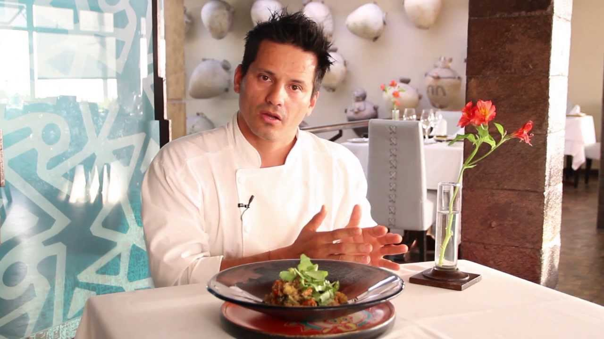

Flavio, nació en Lima, en el año 1974 y antes de convertirse en cocinero, fue "alumno" de su abuela, que vio en él un gran conocimiento y aprecio por la raíz de los sabores, en el restaurante que hoy en día dirige y regenta, y el cual es uno de los mejores restaurantes de Perú; El Señorío de Sulco, basado en la puesta en valor de la cocina regional y la innovación sobre la misma. Está considerado uno de los principales embajadores de la gastronomía peruana por todo el mundo, llevando un mensaje de proyección futurista. Además de chef, trabaja como asesor de diferentes empresas en el marco del desarrollo de sabores
